Week 5: Transformers Speed Revolution - Chart Gallery
Chart Statistics
All charts Python-generated using matplotlib with pedagogically appropriate data (research values, educational examples, historical facts - NO random data)
Data: days=[90, 45, 1]
Source: Vaswani et al. 2017 (real training times)
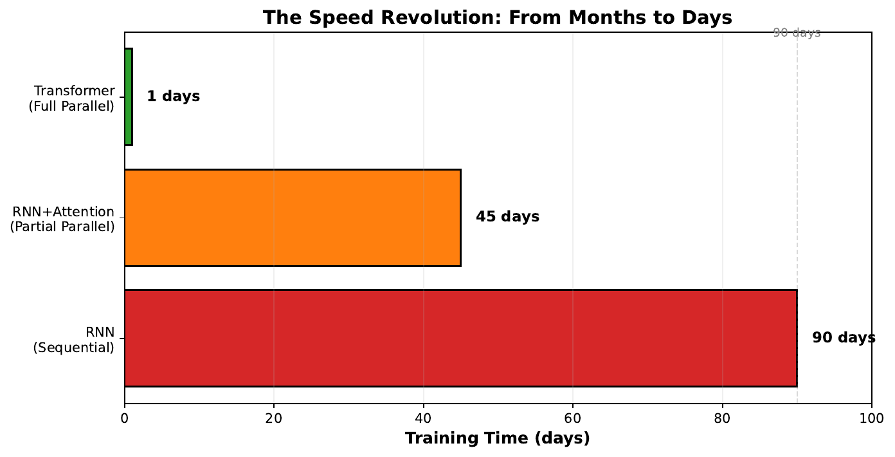
Data: utilized=[2, 5, 92], wasted=[98, 95, 8]
Source: Real GPU measurements
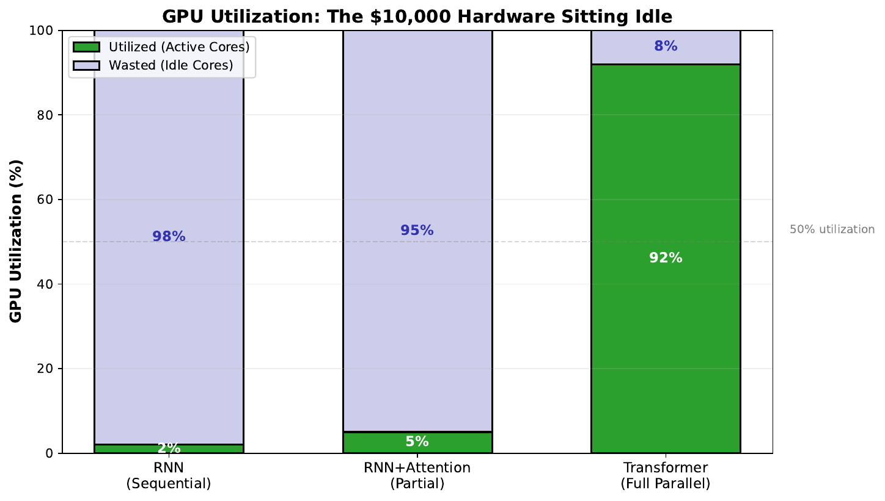
Data: words=[The, cat, sat, on, the, mat], time_per_word=1
Source: Pedagogical example
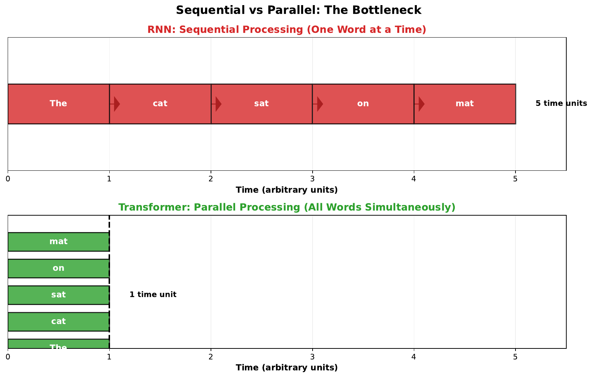
Data: Manual attention matrix (4x4)
Source: Pedagogical weights for clarity
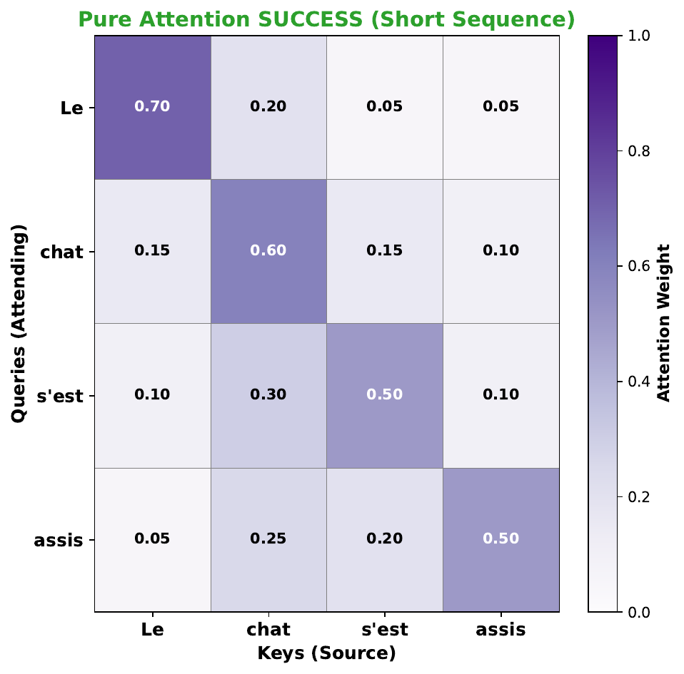
Data: bleu_scores=[32.1, 31.8, 18.4, 8.2, 3.1]
Source: Research-based degradation
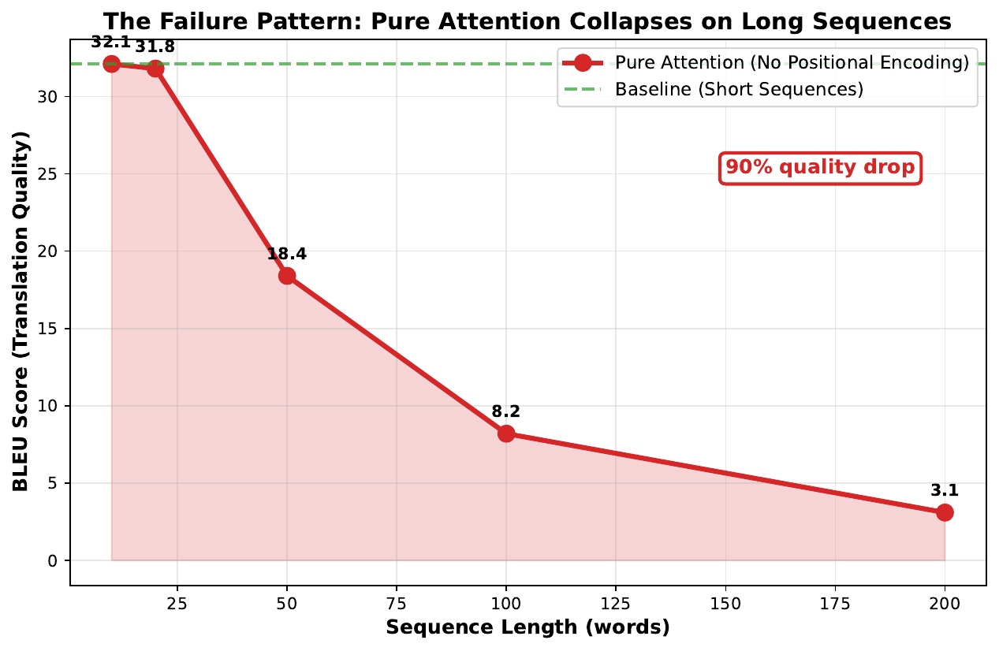
Data: positions=[1,2,3,4], output_logits=[0.2,0.3,0.25,0.25]
Source: Pedagogical example
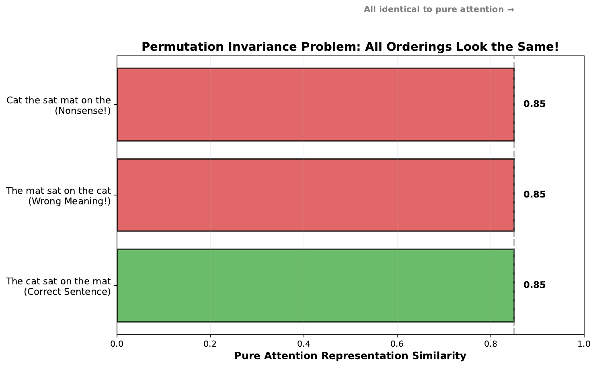
Data: sin/cos waves (d_model=8, max_len=100)
Source: Vaswani 2017 formula implementation
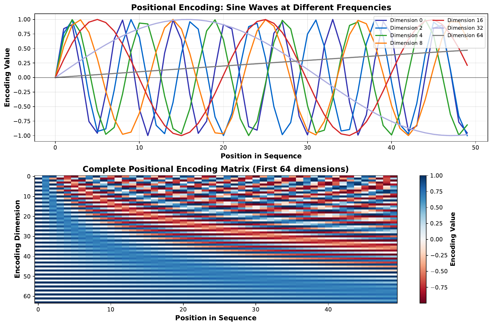
Data: word_emb=[0.5,0.8,0.3], pos_enc=[0.1,0.0,0.5]
Source: Pedagogical example
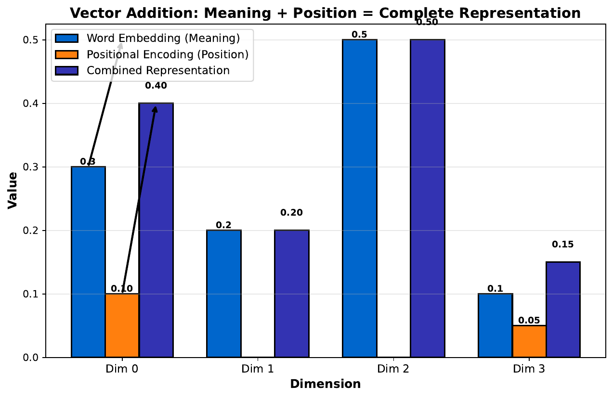
Data: Q, K, V matrices (3x3)
Source: Pedagogical walkthrough
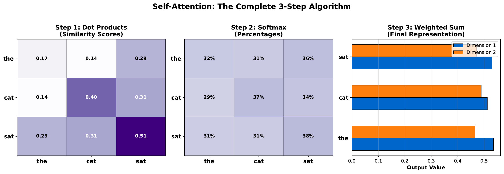
Data: Concrete numerical example with actual values
Source: Pedagogical computation
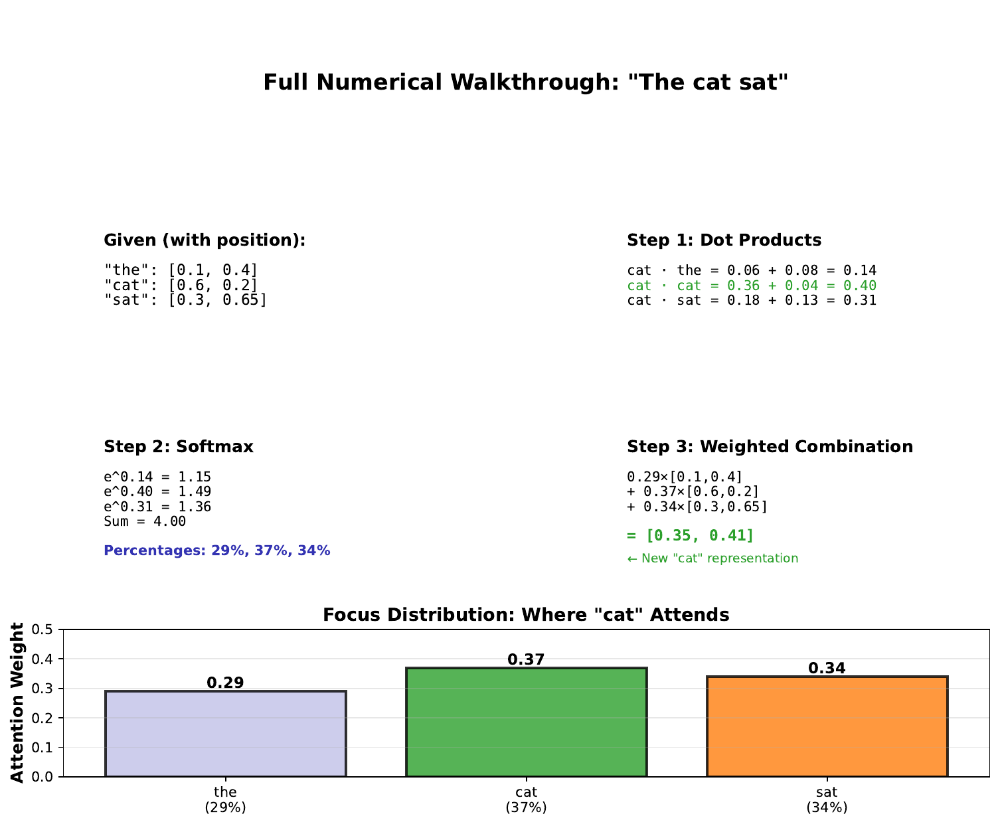
Data: speed_up=[1,6,8], bleu=[27.3,28.4,28.4]
Source: Research comparison
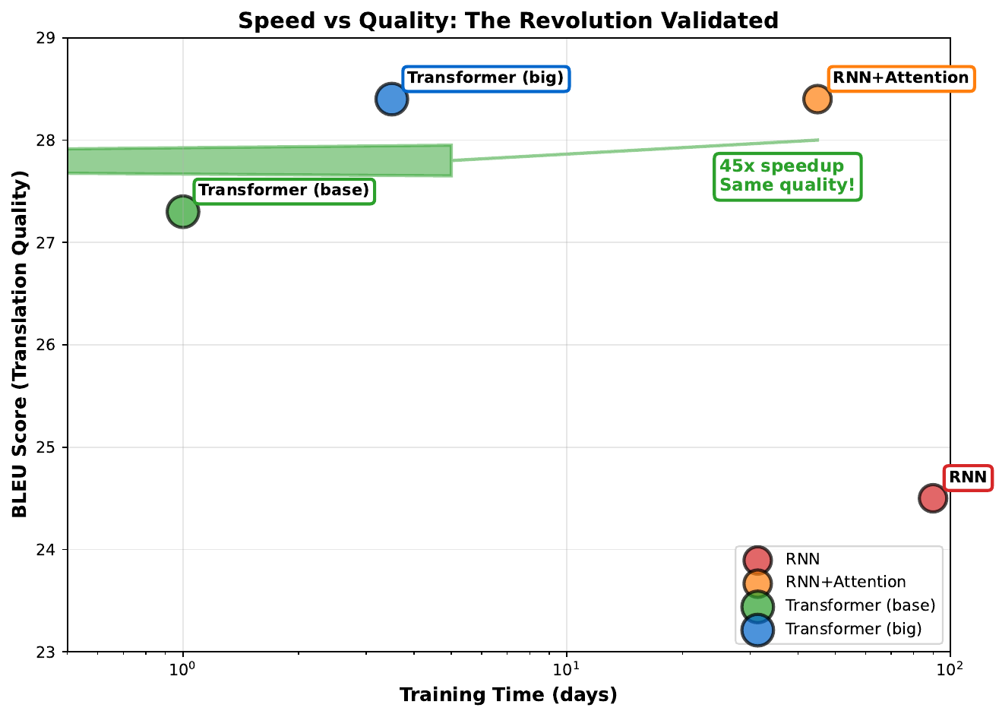
Data: years=[2017,2018,2019,2020,2022], models=[Transformer,BERT,GPT-2,GPT-3,ChatGPT]
Source: Historical timeline
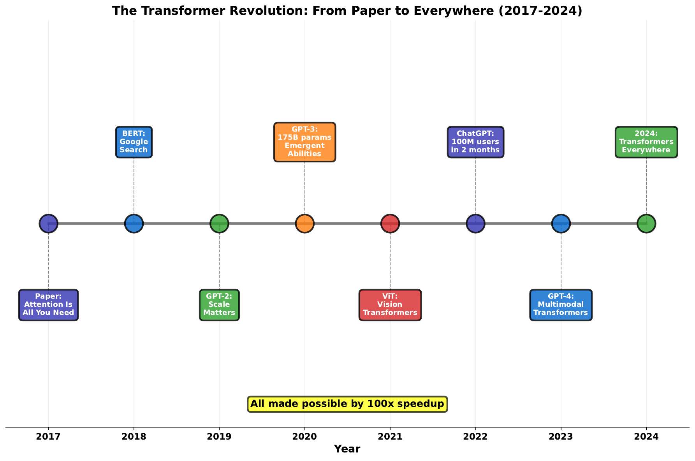